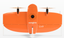
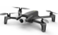
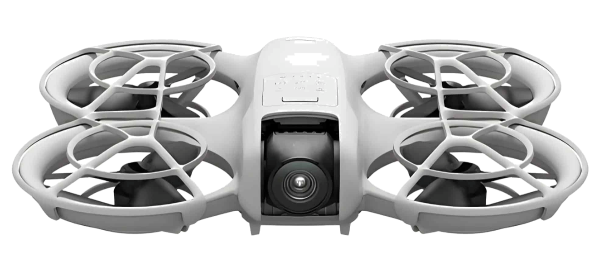

Requirements
- 💰 Low cost: easy to afford for archaeologists.
- ⏱️ Endurance: fly for a long time and complete its mission.
- 🔋 Battery life: without being charged.
- 📷 Camera: to capture footage of the ground.
- 💻 Programmable: easy to code for archaeologists.
- 🎒 Portability: easy to move to and from sites.
- 📤 Data transfer ease: the data should be easy to transfer from the drone to the archaeologist's computer.
- 👁️ Large Field of vision: to capture wider pictures.
Drone Comparison
| Drone | WingtraOne PPK VTOL | Parrot ANAFI Work | DJI Tello |
|---|---|---|---|
| Image |
 |
 |
|
| Cost | 19K - 28K | 10K | 99$ - 300$ |
| Coverage | >500 acres | 4 km control | 100 meters |
| Battery | Two 99Wh | Smart LiPo 2.7 Ah | Detachable ~1.1 Ah |
| Battery Time | 59 min | 25 min | 13 min |
| Flight Speed | 35 mph | 33 mph | 17.6mph |
| Program | WingtraPilot mission plan software | Controlled by FreeFlight app; SDK available | App-controlled; Blockly/Scratch/Python (EDU) |
| Portable | 10.6 lb | ~0.7 lb | ~0.18 lb |
| Data transfer | SD card + wired/tether | Wi-Fi/USB + microSD | Wi-Fi to phone |
| Field of vision | Very wide mapping | Wide-angle ~84° HFOV | Wide-angle ~82.6° FOV |
Key Insights
Choosing a Drone for Your Project
- Budget Constraints: If cost is the primary concern, the DJI Tello offers exceptional value at under $300.
- Coverage Needs: For large archaeological sites, the WingtraOne PPK VTOL can cover over 500 acres in a single flight.
- Ease of Use: The DJI Tello is programmable with Blockly, Scratch, or Python, making it ideal for educational settings.
- Professional Surveys: The Parrot ANAFI Work and WingtraOne are suited for larger-scale, professional archaeological surveys.
- Portability: All supported drones are portable, but the DJI Tello is the most lightweight at ~0.18 lb.
🚁 Supported Drones
We support a range of drone models for archaeological fieldwork. Here are two of our most popular options:
DJI Tello
An affordable, programmable drone perfect for educational and small-scale archaeological surveys. Features Python programmability and impressive flight time.
Visit DJI Tello →
DJI Neo
The world's smallest consumer drone, weighing just 135g. Ideal for portable archaeological surveys with smartphone control and compact design.
Visit DJI Neo →